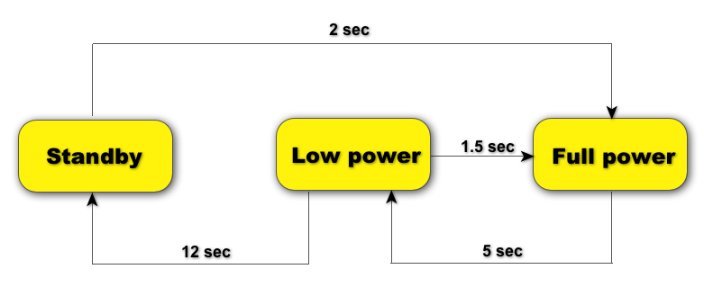

Performance and Optimization
Advanced Titanium Mobile Development
Module time: 60 minutes
(30 mins teaching, 30 mins lab)
This lesson can inspire discussion and questions and might take longer than the listed time. Because of the importance of this lesson, be prepared to answer questions and discuss the materials to the satisfaction of your students.
Agenda
- Performance tips and tricks
- Memory management
- Dos and Don'ts
- Lab
Performance Optimization in Ti
For small-medium apps, not a concern usually
As apps become complex, Titanium can't shield you from memory management
Computation is usually not bottleneck, RAM is
Managing memory usually means management of UI components
Need to worry about running out of resources
The biggest concern is running out of memory
Mostly that means getting rid of things you no longer need
Your apps can have as little as 12 MB of memory in which to run. See the docs for full info on memory allotments for the various platforms.
JavaScript Garbage Collection
Automatic (you don't have to release memory)
Objects collected when no references remain
'Mark and sweep'
Force by removing all references
To understand memory management in Titanium, you need to understand it in JavaScript
Garbage collection is automatic, you don't have to manually track and release memory
Objects are GC'd when no references remain
Mark & Sweep:
- JS stops and scans
- Marks all objects except those in use
- Objects marked are instructed to shut down & destroy
- App execution resumes
Force an object to be GC'd by removing all references to it
Can be tough as references can be 'hidden' in event listeners, closures, etc.
When Does Titanium Clean Up?
When a window is closed (UI is cleaned up)
When a variable holding a proxy object is set to null
Nulling a container (window or view) can clean up its children — if no external references remain
Note: Showing/hiding views will improve DRAW SPEED, but memory will still be in use
http://vimeo.com/29804284 (Codestrong - Memory leaks talk)
Titanium needs to signal the native code when to release objects. It does so when:
- A window is closed; the object it contains are generally removed and memory freed
- You manually set a reference to null (proxy objects are the JS objects that represent the native equivalent)
Use DDMS and Instruments to monitor memory usage, see when & where you're running out of memory
Then you can take manual actions to clean up
Optional: Demo AppLeak project and fixing memory leaks now
 Topic
Topic
Performance Tips
JavaScript loading tips
Defer loading a script until it is actually needed
require() is best, Ti.include() is okay, but “eval() is evil”
require() is evaluated once and cached
Don't parse JSON packaged with your app - put it inline in JavaScript
Defer loading when possible
require()'d modules are not re-evaluated, though objects might need to be re-instantiated
Don't use eval() unless you must
parsing JSON is much slower than working with inline JS variables
The DB is generally faster than parsine JSON
Older 'hack' of adding objects, functions, and values to Ti.App is no longer recommended. Generally this is disallowed and it can lead to many potentials for problems and crashes.
JavaScript Optimizations
Avoid trips across the bridge!
var table = Ti.UI.createTableView();
var data = [];
for(var i = 0; i < 10000; i++){
// generic object references can be faster
data.push({
title:'Row #'+i,
selectionStyle: Ti.UI.iPhone.TableViewCellSelectionStyle.BLUE
});
/* than calls to Ti proxy methods ...
data.push(
Ti.UI.createTableViewRow({
title:'Row #'+i,
selectionStyle: Ti.UI.iPhone.TableViewCellSelectionStyle.BLUE
});
);
*/
}
table.setData(data);
// References: https://gist.github.com/2989311
// and https://gist.github.com/3056032
Every Ti proxy reference incurs a trip across the bridge, which slows execution. In some cases, you can push execution to the native layer by using generic objects in place of creating explicit objects via proxy methods.
JavaScript Optimizations
And this is even faster!
var table = Ti.UI.createTableView();
var data = [];
// create local references to Ti properties/methods
var SEL_STYLE_BLUE = Ti.UI.iPhone.TableViewCellSelectionStyle.BLUE;
for(var i = 0; i < 10000; i++){
data.push({
title:'Row #'+i,
selectionStyle: SEL_STYLE_BLUE
});
}
table.setData(data);
// References: https://gist.github.com/2989311
// and https://gist.github.com/3056032
But every proxy reference counts, so create local references to properties and even methods. See the gists for full details.
Table View Performance
className allows Titanium to cheat a bit
Set all rows at the same time, don't call append 300 times
Only load as much data as needed
If your table has 1,000s of custom rows, you might need to rethink your UX design
- Adding className enables Ti & underlying OS to reuse table row objects and optimize memory
- A setData() call for a lot of rows is faster than repeated appendRow() calls
- Perhaps you can use alternate UI paradigm to create smaller tables
- Dawson's Lazy Loaded Tables http://j.mp/rbL32h
Database Performance
SQL Queries are fast - use these rather than in-memory sorting of JS arrays, etc.
Wrap multiple inserts in a transaction
Avoid loading Blobs into memory — RAM is the bottleneck
Open/close connections with each use
SQLite Optimization FAQ - http://j.mp/HFxVZ8
- Filter data in SQL rather than via JS (sorting, searching, etc.)
- Transactions bundle many DB operations into a single operation = much faster
- Don't use 'select * from table' if you store blobs in your tables
- Open/closing connections is generally more memory friendly than any performance benefits you'd get from keeping a connection open
Network Performance
Don't assume wifi — test on cell networks
Decrease service payload sizes
Existing web service APIs aren't generally optimized for mobile - make mobile service APIs such that:
- As few requests are made as possible
- The data sets being returned are as small as possible
(JSON helps for this)
- Test in a real-world networking environment (in various data coverage areas)
- Use DDMS & other tools to simulate poorer network conditions
- Decrease payload size (use JSON rather than SOAP for example)
- If you have a lot of data to transfer, a few larger network requests is better than multiple smaller data transfers
- Saves on battery if nothing else (min. time of radio on per network request can suck juice if you have lots of network requests)
Battery Optimization
Critical on Android, important on iOS too
Network and geolocation most critical concerns

More info at:
- Android — http://j.mp/IDMk5H
- iOS — http://j.mp/IDMaeG
Diagram from Google is for AT&T cell radio, but similar case would exist for wifi and for iOS too.
There's a delay transitioning between radio states. Example: per Google, if you query the network every 18 seconds you'll keep the radio continuously in the active state — continual battery drain
- Transfer in bursts
- Don't poll the network without considering radio delays
- Prefetch and cache
- Disable location listeners as soon as you can
Lab Goals
Analyze a memory leak
Correct the leak and test the app
wiki.appcelerator.org/display/td/300+-+Performance+Optimization
In this lab, you will examine an app that contains a memory leak. You'll apply a fix for that memory leak and test the results. You'll use the Instruments tool on the iOS platform for this lab. While Android testing is possible, the tools are less helpful and clear in the information they present.